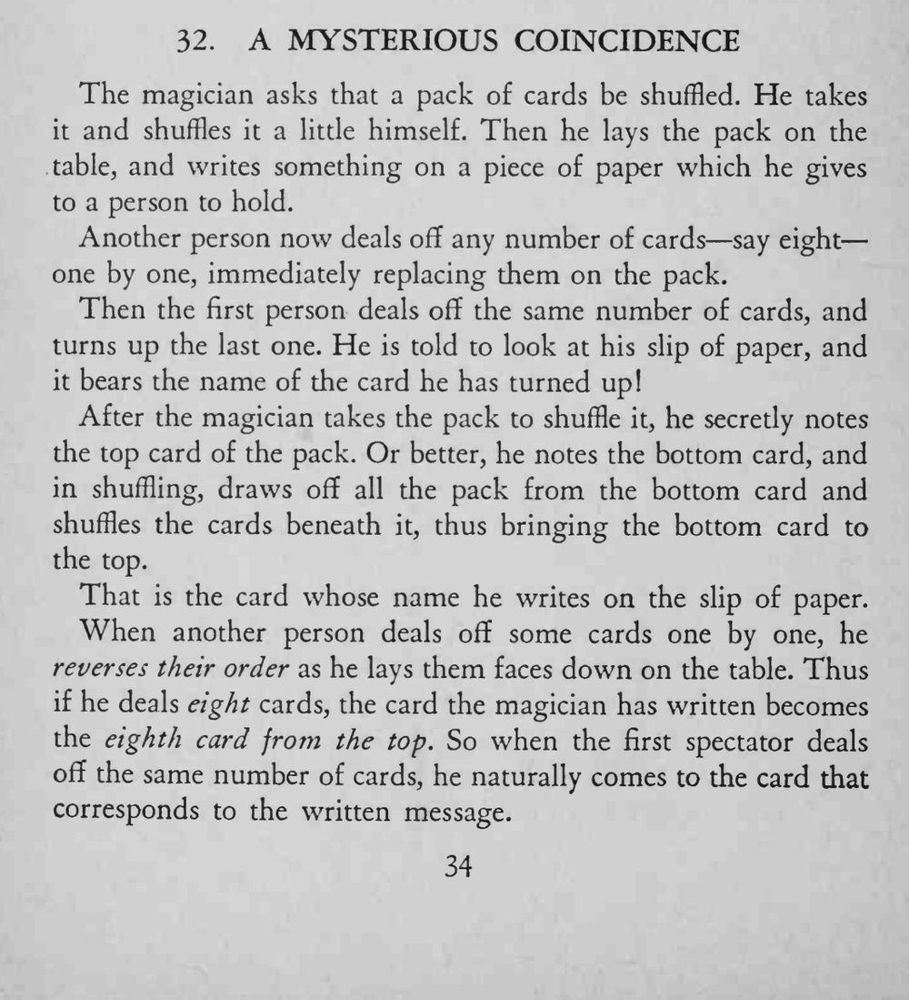

魔术师先写下预言交给一位观众，另一位观众随意数出几张牌，再由第一位观众数出同样张数、翻开最后一张，纸上的牌名正是它。
想让底牌变到顶牌，就从底牌处把整叠牌抽走，只洗下面那些牌。

The magician asks that a pack of cards be shuffled. He takes it and shuffles it a little himself. Then he lays the pack on the table, and writes something on a piece of paper which he gives to a person to hold. Another person now deals off any number of cards say eight one by one, immediately replacing them on the pack. Then the first person deals off the same number of cards, and turns up the last one. He is told to look at his slip of paper, and it bears the name of the card he has turned up! After the magician takes the pack to shuffle it, he secretly notes the top card of the pack. Or better, he notes the bottom card, and in shuffling, draws off all the pack from the bottom card and shuffles the cards beneath it, thus bringing the bottom card to the top. That is the card whose name he writes on the slip of paper. When another person deals off some cards one by one, he reverses their order as he lays them faces down on the table. Thus if he deals eight cards, the card the magician has written becomes the eighth card from the top. So when the first spectator deals off the same number of cards, he naturally comes to the card that corresponds to the written message.